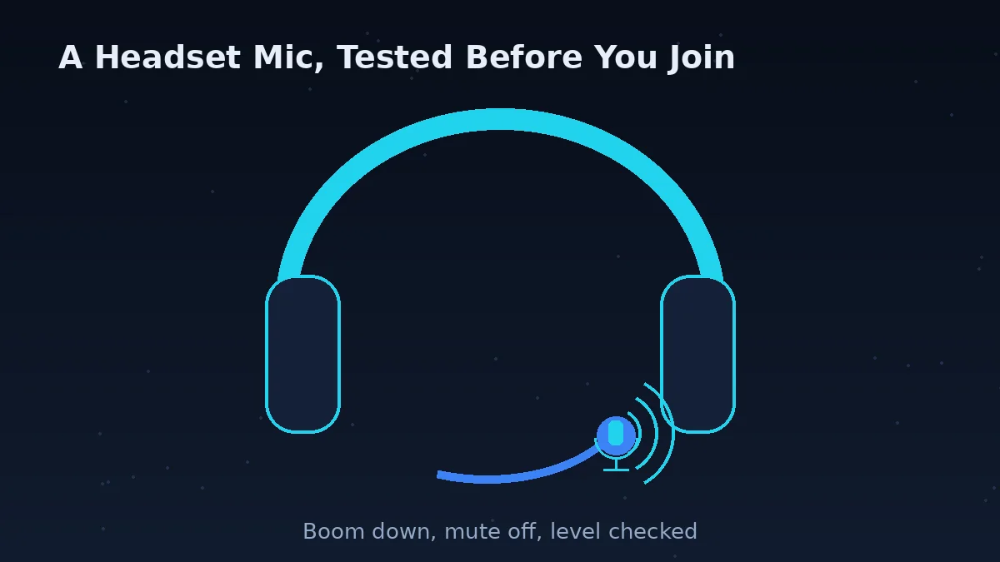
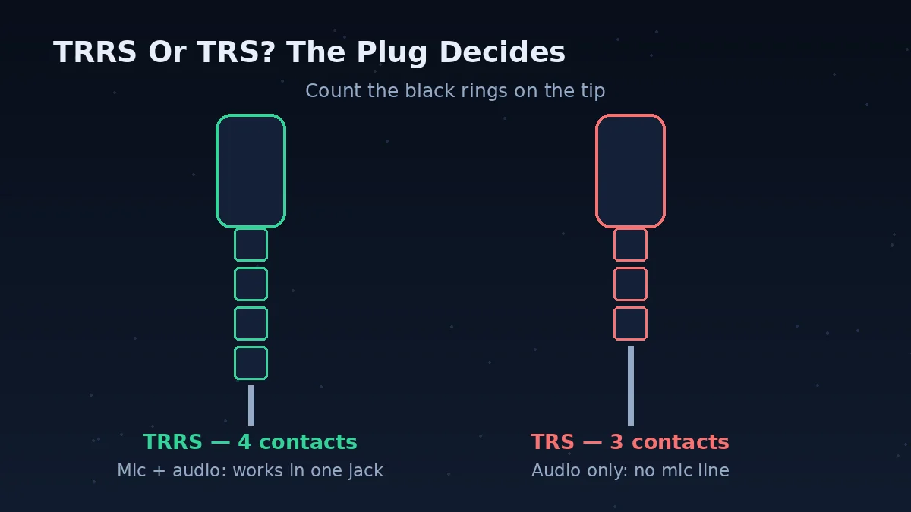
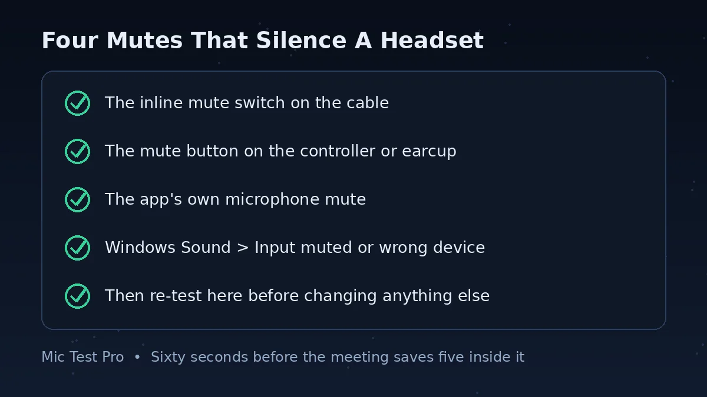
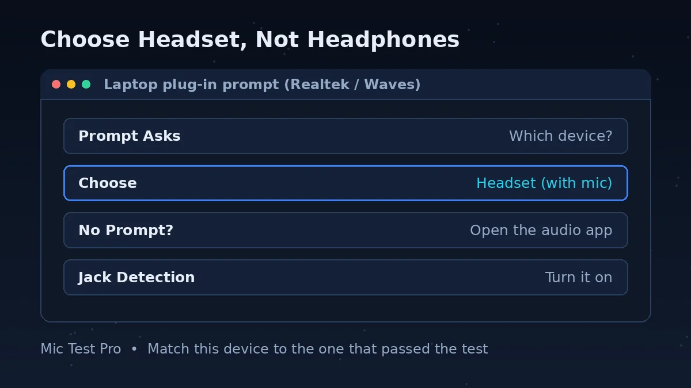

Read Your Test Result First

A headset mic test has two possible answers, and they point in opposite directions. If the waveform moves when you speak, the microphone works — and the fault is a setting, a mute, or the app you are about to join. If it stays flat, the fault is in the headset, the plug, or the socket, and the sections below take you through them in order.
Start the test above and speak at your normal call volume, with the headset plugged in exactly as you will use it on the call. Watch the Device box as well as the waveform: if it names your headset, the browser is listening in the right place. If it names a laptop mic instead, the browser is listening to the wrong place — and the headset test tells you nothing until that is fixed.
Most silent headset mics are not broken hardware. They are a boom that has drifted away from the mouth, a mute switch nobody noticed, or a plug that was never meant to carry a microphone — a jack mismatch, not a dead mic. This page is a headphone mic test and a sound test headphones owners can run in the browser: it checks the mic your browser can reach, and the guide below finds why it is silent.
How To Test Your Headset Mic
Plug the headset in exactly as you will use it on the call — same socket, same adapter if you use one. Click “Start Mic Test” above and allow microphone access. The Device box should name your headset.
Speak at your normal call volume with the boom about two finger-widths from the corner of your mouth. The waveform should move clearly while you speak and settle when you stop.
Stay silent for a few seconds and note the Noise Level. Then make the sounds that will exist during the real call — typing, a fan, an open window. If the noise reading jumps while you are silent, your callers will hear that noise too.
Run an audio test for headphones as well as the mic: play a short clip and check you hear it in both ears. Sound in one ear only, or sound with no mic at all, points at the plug — see the jack table below.
When this test passes, open the app you are about to join and select the same headset device there. Test headset microphone input here first — if it works here, you know the headset works before the app gets a say.
Which Jack Do You Have?

Count the rings on the plug. A plug with three insulating rings (TRRS, four contacts) carries stereo audio and the microphone on one plug. A plug with two rings (TRS, three contacts) carries stereo audio only — there is no mic wire at all, so no setting can make that mic appear.
That one count explains the most confusing headset fault there is: you hear everything, nobody hears you. The headphones work because the audio wire is there; the mic cannot work because its wire is not.
One more plug trap: a few older headsets use the older OMTP wiring, which swaps the microphone and ground contacts compared with the CTIA wiring that most modern headsets and devices use. On modern gear, an OMTP headset gives you sound but a dead or very weak mic. A small CTIA-to-OMTP adapter swaps the contacts back.
Headset Jack Table: Plug, Socket, Adapter
| Your plug | What it carries | What socket it fits | What you need |
|---|---|---|---|
| One plug, three rings (TRRS) | Stereo audio + microphone | One combined socket with a headset icon | Nothing — plug straight in |
| One plug, three rings (TRRS) | Stereo audio + microphone | Two separate sockets, pink and green | A headset splitter: one female TRRS socket to two male plugs — green for headphones, pink for mic. Look for CTIA on the splitter, which most modern headsets use. |
| One plug, two rings (TRS) | Stereo audio only — no mic wire | Any headphone socket | Nothing will add a mic to this plug — use a different headset, or a USB adapter with its own mic input |
| Two plugs (pink + green) | Audio on one plug, mic on the other | One combined socket | A combiner — the opposite adapter to a splitter, and a different part |
| USB plug | Audio + mic over USB | A USB port on a PC | Nothing on a PC — but on Xbox, only headsets licensed for Xbox work over USB; on a controller, use the 3.5 mm plug instead |
Watch out for the trap adapter: a headphone-sharing splitter (one plug in, two headphone outputs out) duplicates sound only and carries no mic. It looks like the right part and does the wrong job — a common wrong purchase.
Common Headset Microphone Problems
You Hear Sound, Nobody Hears You
The plug is the first suspect: a two-ring TRS plug has no mic wire. After that, check the inline mute switch on the cable and the app's own mute — both are easy to leave on, and both silence the mic while the headphones keep working.
The Mic Works On Your Phone, Not Your PC
Your phone has one combined socket, so a single-plug headset just works there. A PC may have two separate sockets that need a splitter, or a plug-in prompt that was answered wrong. The headset is fine — the PC setup is the fault, and the jack table above is the fix.
Your Voice Sounds Quiet Or Far Away
Check the boom first — about two finger-widths from the corner of your mouth — then the inline volume wheel on the cable, which is easy to knock down. Then raise the input level in your system sound settings. If it is still quiet on your phone too, the headset is the fault.
The Mic Cuts Out When You Move
A loose plug or a worn cable is the usual cause. Push the plug fully in — a half-seated TRRS plug can carry audio and drop the mic — and try the rear sockets on a desktop PC instead of the front panel, which wears out first. If moving the cable changes the result, the cable is the fault.
The App Uses The Laptop Mic Instead
The browser or the app selected the built-in microphone while the headset sat connected. Compare the Device box name on this page with the app's input device — they must match. If they do not, one of the two is listening to a different place, and that is the whole fault.
It Worked Yesterday And Stopped Today
Something changed without you noticing: the plug was answered as Headphones instead of Headset, the inline mute was knocked on, or the headset reconnected to another device. Run this test, then work the mutes and the jack table in order — the change is almost always one of those three.
Your Bluetooth Headset Sounds Muffled On Calls
When an app opens the microphone, a Bluetooth headset switches from its music profile to a hands-free call profile, and the sound quality drops — your voice can turn muffled or thin even though music sounded fine a minute earlier. That is the profile switch, not a fault. For a call that matters, a wire, a USB headset or a 2.4 GHz dongle avoids the switch entirely.
Boom Position And The Four Mutes

Put the boom about two finger-widths from the corner of your mouth — roughly 1 to 2 inches — to the side rather than directly in front of it or under your nose. That is a practical guide, not a specification: close enough that your voice is loud, far enough to the side that breath noise and popping stay out of the mic.
Before touching any setting, clear the four mutes that silence a headset. The inline switch on the cable. The mute button on the controller or the earcup. The mute in the app. And the input itself, muted or turned down in your system sound settings. One of those four is on in most “my headset mic stopped working” cases, and checking them takes less than a minute.
The “Which Device Did You Plug In?” Prompt

On many laptops, plugging into the combined jack pops up a question: which device did you plug in? Choose Headset, not Headphones — or the microphone never appears. The prompt comes from the maker's audio software, such as Realtek Audio Console or Waves MaxxAudio, not from Windows itself, so it looks slightly different on every laptop.
If no prompt appears, open that audio app and turn jack detection on — in Realtek Audio Console, that is under Device advanced settings, where the choice can also be changed afterwards. The same choice is the whole fault when a headset works on one laptop and not another: one machine was told it is a headset, the other was told it is only headphones.
Headset On A Console Controller
A headset plugs into the controller, not the console — and the controller has its own mute. On PlayStation, the DualSense controller has a headset jack, a built-in microphone and a mute button: if the controller mute is on, the headset mic is silent whatever the game says. Check that button before changing anything in the game.
On the PS5 itself, open Settings > Sound > Microphone and set Input Device to your headset — otherwise the console may be listening to the controller's built-in microphone instead of the headset. On the Microphone Level screen, speak at your normal volume and adjust until the indicator sits in the Good zone. And if the mic is off every time you sign in, check Microphone Status When Logged In in the same menu.
On Xbox, the same rule holds with a different menu. Xbox controllers made since mid-2015 have a 3.5 mm jack on the bottom; the very first Xbox One controllers do not and need an adapter, while all Xbox Series X|S controllers have the jack. To check the mic, press the Xbox button to open the guide, select the Audio & music icon at the bottom of the guide, and adjust headset volume, chat mixer and mic monitoring on that screen — and check the mic is not muted and Auto-mute is not set to High.
A plain USB PC headset does not work on Xbox just by plugging it in: Xbox only accepts USB headsets made and licensed for Xbox. If your headset also has a 3.5 mm plug, use that into the controller instead.
Still Silent? Test The Headset Somewhere Else
If you came here asking why isn't my headset microphone working and every check above passes but the test is still flat, test the same headset on your phone. If it works there, the headset is fine and the fault is the PC setup — go back to the jack table. If it is silent on the phone too, the headset itself is the fault: try another headset in the same socket to confirm, and the socket is the fault only if that one is silent as well.
Two more swaps are worth trying on a desktop PC: the rear sockets instead of the front panel, which wears out first, and a different USB port for a USB headset. Retest here after each swap, with the setup you will actually use on the call.
Headset Mic Test FAQs
How do I test my headset microphone?
To test headset microphone input, open this page in your browser, click Start Mic Test and allow microphone access. Speak at your normal call volume: if the waveform moves and the Device box names your headset, the mic works. If it stays flat, work down this page — check the boom position, the inline mute switch and the jack type before changing any setting.
Why can I hear sound but nobody hears me?
Hearing sound and sending sound use different wires. The most common cause is the plug: a TRS plug with two rings carries stereo audio only and has no mic wire at all, so you hear everything and nobody hears you. The other common causes are the inline mute switch on the cable, the mic muted in the app, or the wrong input selected — check those in that order.
Do I need a splitter for my headset on PC?
It depends on the sockets. If your headset has one plug and your PC has two separate sockets (pink for mic, green for headphones), yes — you need a headset splitter, one female TRS socket to two male plugs. If your PC or laptop has one combined socket with a headset icon, plug straight in with no splitter. A headphone-sharing splitter is the wrong part: it duplicates sound only and carries no mic.
Why does my headset mic work on my phone but not my PC?
That split tells you the headset itself is fine — the fault is the PC setup. A phone has one combined socket, so a single-plug headset just works there. On a PC, check the jack type first: a two-socket desktop needs a splitter, a combined socket needs the plug pushed fully in, and the plug-in prompt must be answered Headset, not Headphones. Then check the PC's input device and level.
How far should the boom be from my mouth?
About two finger-widths — roughly 1 to 2 inches — from the corner of your mouth, to the side rather than directly in front of it or under your nose. That distance keeps your voice loud while cutting breath noise and popping. If people say you sound far away, the boom has usually drifted too far from your mouth or swung behind your chin.
Why is my headset mic so quiet or far away?
First check the boom position — about two finger-widths from the corner of your mouth — and the inline volume wheel on the cable, which is easy to knock down. Then check the input level in your system sound settings and raise it, and check the app has not set its own input volume low. If the mic is still quiet after all three, test the headset on your phone: if it is quiet there too, the headset is the fault.
Can I use my PC USB headset on Xbox?
Usually no. Xbox only accepts USB headsets made and licensed for Xbox — a plain USB PC headset does not work on Xbox just by plugging it in. If your headset also has a 3.5 mm plug, use that into the controller instead. Xbox controllers made since mid-2015 have a 3.5 mm jack on the bottom; the very first Xbox One controllers do not and need an adapter.
Does this headset mic test record or upload my voice?
No. This tool analyses the microphone in your browser so you can see the waveform and readings. It does not need you to record a message, and your audio is not uploaded or stored by this page.